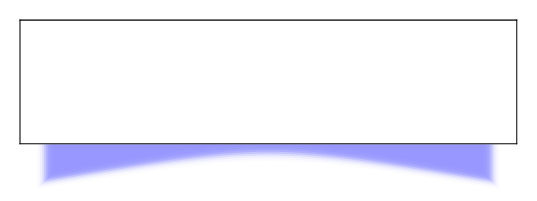

Drop shadows with lifted corners
Posted on August 6, 2017
There is an old question on TeX.SE asking how to draw drop shadows with a
lifted corner. For fun, I decided to translate the code to Metapost and
release it as a module: t-backgrounds. I hope to add a few
other backgrounds to the module in the near future.
The module provides two overlays liftedshadow:big and liftedshadow:medium.
These may be used like any other overlay. Let’s see an example:

which is achieved using:
\usemodule[backgrounds]
\definecolor[darkred][r=0.75]
\definecolor[lightred][r=1,g=0.95,b=0.95]
\definecolor[lightblue][r=0.95,g=0.95,b=1]
\defineframedtext
[shadowedtext]
[
framecolor=darkred,
background={liftedshadow:big,color},
backgroundcolor=lightred,
rulethickness=1pt,
width=broad,
]
\defineframed
[shadowed]
[
frame=off,
background={liftedshadow:medium,color},
backgroundcolor=lightblue,
width=fit,
]
\usemodule[visual]
\starttext
\midaligned{\shadowed{\fakewords{4}{6}}}
\startshadowedtext
\fakewords{40}{50}
\stopshadowedtext
\stoptext
Apart from these two overlays, there are very little configuration options.
The module provides a MPgraphic backgrounds::liftedshadow, which accepts
two options: shadowcolor and shadow.
shadowcolordetermines the color of the shadow. It has to be a predefined ConTeXt color. By default it isshadowcolorwhich is defined as0.5(white).shadowdetermines the shape of the shadow. It is a 3-tuple(x,y,o), wherexspecifies the horizontal distance between the lower corner of the overlay box and the start of the shadow;yspecifies the depth of the shadow at the corners, andoroughly specifies the depth of the shadow in the middle. Forliftedshadow:big, the shadow is(2mm, 3mm, 0.16mm)and forliftedshadow:medium, the shadow is(1.5mm, 1.5mm, 0.12mm).
Here is an example that shows how to change the shadow color and shadow size:
\defineoverlay
[hugeshadow]
[\useMPgraphic{backgrounds::liftedshadow}{shadowcolor=blue, shadow={(4mm, 6mm, 0.3mm)}}]
using which gives
Note that, the backgrounds::liftedshadow graphic just draws the shadow.
It does not fill the overlay box with background color. So, while using
the background, we must specify:
\defineframedtext
[shadowedtext]
[
...,
background={liftedshadow:big,color},
backgroundcolor=...,
...,
]
The options background={liftedshadow:big, color} means that the
liftedshadow:big overlay is drawn first and then the color overlay
is drawn. The color overlay fills the frame with backgroundcolor. If you
wish, you can replace the color overlay with another overlay that does a
fancier fill (say shading or hatching).
This entry was posted in Visualization and tagged metapost, backgrounds, shadows.